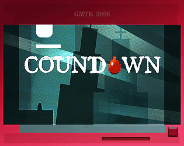
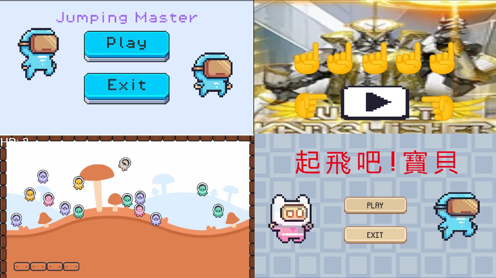
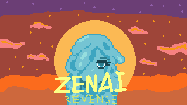

115-1 從 0 到 1 遊戲工作坊 第二期
六位社員在五週內，使用 Godot 搭配社團自製的免程式實驗包， 從抽機制卡做實驗、用起承轉合排關卡、替同一份關卡調手感，到最後幫遊戲穿上外衣， 並在發布之夜站上台分享自己作品的驕傲與掙扎。
學員：AaaBbp、omino、Silvite、Leo_768、糖夢、T.K.
社員們正在進行與已完成的遊戲開發專案
六位社員在五週內，使用 Godot 搭配社團自製的免程式實驗包， 從抽機制卡做實驗、用起承轉合排關卡、替同一份關卡調手感，到最後幫遊戲穿上外衣， 並在發布之夜站上台分享自己作品的驕傲與掙扎。
學員：AaaBbp、omino、Silvite、Leo_768、糖夢、T.K.

取材自 GMTK Game Jam 2026 主題「Countdown」的雙關拆解：把「COUNT DOWN」拆成 Count（吸血鬼公爵）與 Down（下樓），描述吸血鬼公爵走下永無止盡樓梯的故事，是一款帶點黑色幽默的可愛小品。 以 Godot 開發，在 4 天內從零完成。
製作者：露柑（程式）、侯鱟（美術＆文本）


一款節奏緊湊的動作原型遊戲，主角是一名史萊姆女刺客。 利用她的反彈移動與左輪手槍，精準打擊敵人弱點，在戰場上掌握絕對主導權。
製作者：露柑
目前沒有符合篩選條件的專案。
想看原始碼？→ NGDC GitHub